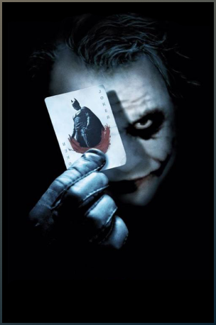
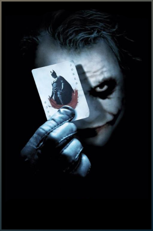

BATMAN AU CINÉMA
Le personnage de Batman est un super héros de l’univers de DC Comics. Il a été créé par le dessinateur Bob Kane et le scénariste Bill Finger et apparaît pour la première fois dans le comic book Detective Comics en 1939. Batman se différencie de Superman, alors héros majeur de DC, car il n’a aucun pouvoir. Il sera porté au cinema pour la première fois en 1943 par Lewis Wilson et bénéficiera de nombreux reboot, donnant l’occasion à de multiples acteurs d’interpréter l’homme chauve souris. Voici les trois derniers :


NÉMÉSIS
Batman souhaite éradiquer la criminalité de Gotham. C’est pourquoi, il affrontera la plupart du temps, des vilains sans capacités surnaturelles mais particulièrement violents ou psychopathes. Avec son introduction dans la Justice League il aura l’occasion de se mesurer à des antagonistes qui défient l’imagination et les lois de la physique. Parmis les derniers ennemis emblématiques que nous avons pu voir au cinéma, on retrouve :
 


MULTIMÉDIA

ACTION, ADVENTURE
Batman Begins
IMDB:8.2
Le jeune Bruce Wayne assiste impuissant au meurtre de ses parents. Profondément traumatisé, il grandit obnubilé par un désir de vengeance. La Ligue des ombres, une secte de guerriers ninja dirigée par Ra's al Ghul, se chargera de son entraînement. De retour chez lui à Gotham, avec l'aide de son majordome Alfred Pennyworth, Bruce Wayne se lance alors dans la lutte contre le crime sous le nom de Batman.

ACTION, ADVENTURE
The Dark Knight
IMDB:9
Batman aborde une phase décisive dans sa guerre contre le crime. Avec l'aide du lieutenant de police Jim Gordon et du nouveau procureur Harvey Dent, il entreprend de démanteler les dernières organisations criminelles qui infestent les rues de la ville. L'association s'avère efficace, mais le trio se heurte bientôt à un nouveau génie du crime qui répand la terreur et le chaos dans Gotham : le Joker.
ACTION, ADVENTURE
The Dark Knight Rises
IMDB:8.4
Huit ans ont passé depuis que Batman a disparu, passant du statut de héros à celui de fugitif. Le « Chevalier Noir » a tout sacrifié pour le mieux. Pendant un certain temps, le mensonge a l'effet escompté : la criminalité de Gotham City est presque éliminée par le commissaire James Gordon avec l'unité anticrime d'Harvey Dent. Mais l'arrivée à Gotham de Bane, un terroriste masqué, chamboule l'ordre établi et pousse Bruce à sortir de l'exil qu'il s'est imposé

PRENONS CONTACT
En cochant cette case vous acceptez de recevoir l’actualité concernant les aventures de Batman :
Des films
Des comics
De tout